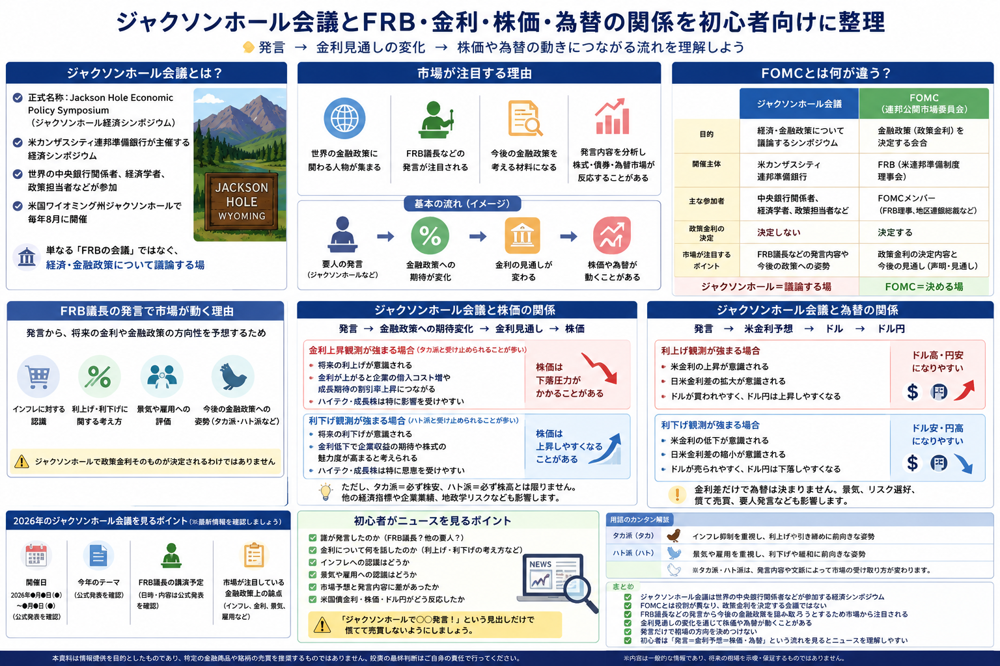

話題・トレンド
ジャクソンホール会議とは？なぜ株価や為替が注目するの？初心者向けに解説
毎年8月になると、金融ニュースで「ジャクソンホール会議」や 「FRB議長の発言に注目」といった言葉を目にすることがあります。 ジャクソンホール会議は、世界の中央銀行関係者や経済学者などが集まり、 経済・金融政策について議論する国際的なシンポジウムです。 FOMCのように政策金利を決定する会合ではありませんが、 発言内容から今後の金融政策を読み取ろうとする市場参加者が多いため、 株価・債券・為替市場が反応することがあります。
Overview
ジャクソンホール会議とFRB・金利・株価・為替の関係

- ジャクソンホール会議では政策金利そのものを決定しません。
- 重要人物の発言から、今後の金融政策への姿勢が注目されます。
- 市場参加者の金利予想が変化すると、株価・債券・ドルなどが動く場合があります。
- 発言の一部分だけで「株高」「株安」「円高」「円安」と決めつけないことが大切です。
Definition
ジャクソンホール会議とは？
ジャクソンホール会議は、正式には 「Jackson Hole Economic Policy Symposium」 と呼ばれる経済政策シンポジウムです。 米国のカンザスシティ連邦準備銀行が主催しています。
主催
カンザスシティ連邦準備銀行
米国の連邦準備制度を構成する地区連邦準備銀行の一つ、 カンザスシティ連銀が毎年開催しています。
開催地
米国ワイオミング州ジャクソンホール
開催地の名称から、日本では一般に 「ジャクソンホール会議」と呼ばれています。
参加者
中央銀行関係者・政策担当者・経済学者など
世界の中央銀行関係者、政策担当者、経済学者、 エコノミストなどが参加し、 経済や金融政策に関するテーマについて議論します。
重要ポイント
単なる「FRBの会議」ではない
FRB議長の講演が大きく報じられるため混同されやすいですが、 FOMCのように米国の金融政策を決定するための会合ではありません。
初心者が最初に覚えたいポイント： 「ジャクソンホール＝FRBが金利を決める会議」ではありません。 経済や金融政策について議論するシンポジウムです。
Why It Matters
なぜ世界中の投資家が注目するの？
ジャクソンホール会議には、 世界の金融政策に関わる人物が集まります。 特にFRB議長などの発言は、 今後の米国の金融政策を考える材料として注目されます。
世界の中央銀行関係者が集まる
金融政策を担う中央銀行関係者や政策担当者が参加するため、 世界の金融市場から注目されます。
FRB議長の発言が注目される
米国の金融政策は世界の金利や資金の流れに大きく関係するため、 FRB議長の発言は重要な材料として分析されます。
今後の金融政策を考える材料になる
インフレ、景気、雇用、金利などへの発言から、 市場参加者は次回以降のFOMCの方向性を考えます。
市場予想との差が値動きにつながる
発言内容が市場の予想よりも引き締め的、 または緩和的と受け止められると、 株式・債券・為替市場が反応することがあります。
Comparison
FOMCとは何が違う？
ジャクソンホール会議とFOMCは、 金融ニュースで一緒に登場しやすいものの役割は異なります。 初心者は 「金融政策を決める会合」と「政策を議論するシンポジウム」 の違いを覚えておくと分かりやすくなります。
| 比較項目 | ジャクソンホール会議 | FOMC |
|---|---|---|
| 目的 | 経済・金融政策について議論する | 米国の金融政策を決定する |
| 開催主体 | カンザスシティ連邦準備銀行 | 連邦公開市場委員会（FOMC） |
| 主な参加者 | 中央銀行関係者、政策担当者、経済学者、 エコノミストなど | FRB理事、地区連銀総裁など |
| 政策金利の決定 | しない | する |
| 市場が注目するポイント | 講演や議論から今後の政策姿勢を読み取る | 政策金利、声明文、経済見通し、 議長会見など |
※ スマートフォンでは横にスクロールできます。
FOMC
金融政策を決定する会合
政策金利の誘導目標など、 米国の金融政策を実際に決定します。
Jackson Hole
経済・金融政策を議論するシンポジウム
発言が将来の政策を考える材料になることはありますが、 会場で政策金利を決定するわけではありません。
FOMCについて詳しく知りたい方は FOMCとは？なぜ世界中の投資家が注目するの？ もあわせて確認してください。
Fed Chair
なぜFRB議長の発言で市場が動くの？
FRB議長の発言そのものが機械的に株価や為替を動かすわけではありません。 市場参加者が発言から 「今後の米国の金利がどうなりそうか」 を考え、その予想が変化することで市場価格が動きます。
Inflation
インフレに対する認識
物価上昇が依然として強いと考えているのか、 インフレが落ち着いてきたと見ているのかが注目されます。 物価指標については CPI（消費者物価指数）とは？ で詳しく解説しています。
Interest Rates
利上げ・利下げへの考え方
金利を高い水準で維持する必要があるのか、 将来的な利下げをどう考えているのかによって、 市場の金利予想が変化することがあります。
Economy
景気への評価
経済成長が強いのか、 それとも景気減速のリスクが高まっているのかも、 金融政策を考える重要な材料です。
Employment
雇用への評価
FRBは物価だけでなく雇用も重視します。 労働市場の強さや失業率などへの評価も、 将来の金融政策を考える材料になります。
重要： ジャクソンホールでFRB議長が金融政策について発言しても、 その場で政策金利が変更されるわけではありません。 実際の政策決定はFOMCで行われます。
Stocks
ジャクソンホール会議と株価の関係
株価を見るときは 「FRB議長が何と言ったか」だけではなく、 その発言によって市場の金利予想がどう変わったか を見ることが重要です。
金利上昇観測
高い金利が長引くと意識された場合
市場金利が上昇すると、 企業の資金調達コストや株式の評価に影響する場合があります。 特に将来の成長期待が株価へ大きく反映されている成長株は、 金利変化が意識されやすい傾向があります。
利下げ観測
将来の金利低下が意識された場合
金利低下への期待が株式市場にプラス材料として 受け止められることがあります。 ただし、利下げの背景に強い景気悪化への警戒がある場合など、 必ずしも株価が上昇するとは限りません。
ハイテク・成長株が金利変化を意識されやすい理由
株価は将来の利益への期待を現在の価値として評価する面があります。 金利が上昇すると、 将来の利益を現在価値へ換算したときの評価が低くなりやすいため、 将来の成長期待が大きい企業ほど金利変化を意識されることがあります。
金利が株式市場へ影響する仕組みは 金利上昇とは？投資初心者にどんな影響がある？ でも解説しています。
タカ派
インフレ抑制や金融引き締めを重視
利上げや高い金利の維持など、 インフレを抑えるための金融引き締めに 比較的積極的な姿勢を表す言葉です。
ハト派
景気・雇用にも配慮する姿勢
景気や雇用への影響にも配慮し、 利下げなど金融緩和に比較的前向きな姿勢を表す言葉です。
タカ派＝必ず株安、ハト派＝必ず株高とは限りません。 株価は景気、企業業績、市場予想との違い、 投資家心理など複数の要因で動きます。 基本的な仕組みは 株価はなぜ上下するのか？ でも確認できます。
Foreign Exchange
ジャクソンホール会議と為替の関係
為替市場では、 特に米国の金利見通しとドルの関係が注目されます。 ドル円を見る場合は米国だけではなく、 日本の金融政策や日米金利差なども重要です。
米国の金利見通し
FRBが高い金利を長く維持すると予想されれば、 米国債金利やドルが意識されることがあります。 反対に利下げ期待が強まれば、 金利低下を見込んだ動きが出る場合があります。
ドルの値動き
金利は通貨の魅力を考える材料の一つです。 ただしドルは、 景気、インフレ、地政学リスク、 市場のリスク回避姿勢などでも動きます。
日米金利差
ドル円では米国金利だけではなく、 日本の金利も重要です。 日本銀行の金融政策によって 日米金利差への見方が変化する場合もあります。
ドル円への影響
「米金利上昇＝必ず円安」 「利下げ観測＝必ず円高」 と単純化することはできません。 市場予想との差や日本側の材料なども確認する必要があります。
為替の基本については 円安とは？なぜまたニュースになるの？ も参考にしてください。
2026 Update
2026年のジャクソンホール会議を見るポイント
ここでは2026年8月17日時点で確認できる公式情報を整理します。 年ごとの開催情報だけを将来更新しやすいよう、 独立したセクションにしています。
開催日
2026年8月27日〜29日
カンザスシティ連邦準備銀行は、 2026年のジャクソンホール経済政策シンポジウムを 8月27日から29日に開催すると公表しています。
2026年のテーマ
Financial Innovation: Implications for Payments and Policy
2026年は金融イノベーションと、 それが決済や政策へ与える影響をテーマとしています。
FRB議長
Kevin Warsh（ケビン・ウォーシュ）議長
2026年のFOMCではケビン・ウォーシュ氏が議長を務めています。 FRB議長の発言は米国の金融政策を考えるうえで 市場から特に注目されます。
議長講演
8月のジャクソンホール講演を予定
ウォーシュ議長は2026年7月29日のFOMC後の記者会見で、 8月に行うジャクソンホールでのスピーチについて言及しています。 一方、8月17日時点のカンザスシティ連銀公式ページでは、 詳細な講演時刻を含む全プログラムは公表されていません。
2026年に注目したい金融政策上の論点
2026年の会議では金融イノベーション、 決済システム、金融政策への影響が正式テーマです。 それに加えてFRB議長や中央銀行関係者の発言では、 インフレ、景気、雇用、 今後の金利運営についてどのような認識が示されるかも 市場参加者から注目される可能性があります。
金融イノベーション
新しい金融技術が金融システムや中央銀行政策に どのような変化をもたらすのかがテーマです。
決済システム
決済技術の進化が金融機関や中央銀行の役割へ どのように影響するのかが議論の対象になります。
金融政策
インフレ、景気、雇用などに対する中央銀行関係者の認識も、 市場が金融政策を考える材料になります。
2026年部分は将来更新する前提で確認： 開催直前にはカンザスシティ連銀やFRBの公式ページで、 講演時刻、登壇者、プログラムなどの最新情報を 再確認するのがおすすめです。
News Checklist
初心者がニュースを見るポイント
「ジャクソンホールで○○発言」という見出しだけで 慌てて売買する必要はありません。 発言者、内容、市場予想との差、 その後の市場反応を順番に確認すると理解しやすくなります。
-
誰が発言したのか
FRB議長、FRB理事、地区連銀総裁、 海外中央銀行の関係者など、 発言者の立場を最初に確認します。
-
金利について何を話したのか
利上げ・利下げについて直接的な発言があったのか、 それとも一般的な政策姿勢を説明したのかを分けて考えます。
-
インフレへの認識
物価上昇を依然として警戒しているのか、 インフレが落ち着いていると評価しているのかを確認します。
-
景気・雇用への認識
景気減速や雇用悪化への警戒が強まっている場合、 インフレだけでなく景気とのバランスも重要になります。
-
市場予想と発言内容に差があったか
市場は発言前から一定の金融政策見通しを織り込んでいます。 発言そのものより、 事前予想との差が値動きにつながる場合があります。
-
米国債金利・株価・ドル円がどう反応したか
発言後に米国債金利、米国株、日本株、 ドル円などがどう動いたかを見ることで、 市場が発言をどう受け止めたのかを確認できます。
見出しだけで慌てて売買しないことが大切です。 「タカ派発言」「利下げ示唆」といった短い見出しだけでは、 発言全体の文脈や、 市場が事前に何を予想していたのかまでは分かりません。
Related Articles
あわせて読みたい関連記事
ジャクソンホール会議のニュースを理解するには、 FOMC・物価・金利・為替・株価指数の基本を 一緒に確認すると理解しやすくなります。
FAQ
ジャクソンホール会議に関するよくある質問
-
ジャクソンホール会議とは何ですか？
正式には「Jackson Hole Economic Policy Symposium」と呼ばれる 経済政策シンポジウムです。 米カンザスシティ連邦準備銀行が主催し、 世界の中央銀行関係者、政策担当者、 経済学者などが参加します。 -
ジャクソンホールはどこにありますか？
米国ワイオミング州にあります。 この地域で経済政策シンポジウムが開催されることから、 一般に「ジャクソンホール会議」と呼ばれています。 -
なぜ8月に注目されるのですか？
ジャクソンホール経済政策シンポジウムが 例年8月に開催されるためです。 FRB議長など中央銀行関係者の発言が、 今後の金融政策を考える材料として注目されます。 -
FOMCとの違いは何ですか？
FOMCは米国の金融政策を決定する会合です。 一方、ジャクソンホール会議は 経済や金融政策について議論するシンポジウムであり、 役割が異なります。 -
ジャクソンホールで政策金利は決まりますか？
決まりません。 米国の政策金利はFOMCで決定されます。 ジャクソンホールでの発言が 将来の政策を考える材料になることはありますが、 会議そのものに政策金利を決める役割はありません。 -
なぜFRB議長の発言で株価や為替が動くのですか？
市場参加者がFRB議長の発言から、 今後のインフレ、景気、雇用、 政策金利への考え方を読み取ろうとするためです。 金利予想が変化すると、 株式・債券・為替市場が反応する場合があります。 -
タカ派・ハト派とは何ですか？
一般にタカ派はインフレ抑制を重視し、 金融引き締めに比較的積極的な姿勢を表します。 ハト派は景気や雇用への影響にも配慮し、 金融緩和に比較的前向きな姿勢を表す言葉です。 ただし実際の政策姿勢を単純に二つへ分類できない場合もあります。
Summary
まとめ｜発言→金利予想→株価・為替の流れを見る
- ジャクソンホール会議は、 世界の中央銀行関係者や政策担当者、 経済学者などが参加する経済シンポジウムです。
- FOMCとは役割が異なり、 ジャクソンホール会議で政策金利を決定するわけではありません。
- FRB議長などの発言から 今後の金融政策を読み取ろうとするため、 市場から注目されます。
- 金利見通しの変化を通じて、 株価・債券・為替が動くことがあります。
- タカ派なら必ず株安、 利上げ観測なら必ず円安というように、 相場方向を単純に決めつけることはできません。
- 初心者は 「発言 → 金利予想 → 株価・為替」 という流れを見るとニュースを理解しやすくなります。
Official Sources
2026年情報の主な確認先
開催日やテーマなど年ごとに変わる情報については、 公開時点の公式情報を確認しています。
Next Step
次はFOMCとCPIの関係を確認する
ジャクソンホール会議のニュースを理解できるようになったら、 実際に金融政策を決めるFOMCと、 インフレを確認する代表的な経済指標CPIもあわせて理解すると、 金利・株価・為替のニュースがつながって見えやすくなります。
ご利用にあたっての注意事項
本記事は一般的な情報提供と金融教育を目的としており、 特定の金融商品・銘柄・通貨・証券会社等の推奨や、 投資の勧誘を目的としたものではありません。 金融市場は、金融政策、経済指標、企業業績、 地政学リスク、市場参加者の予想など 多くの要因によって変動します。 ジャクソンホール会議やFRB関係者の発言だけを根拠に、 将来の相場方向を断定することはできません。 取引を行う際は最新の公式情報や商品説明書等を確認し、 ご自身の判断と責任で行ってください。